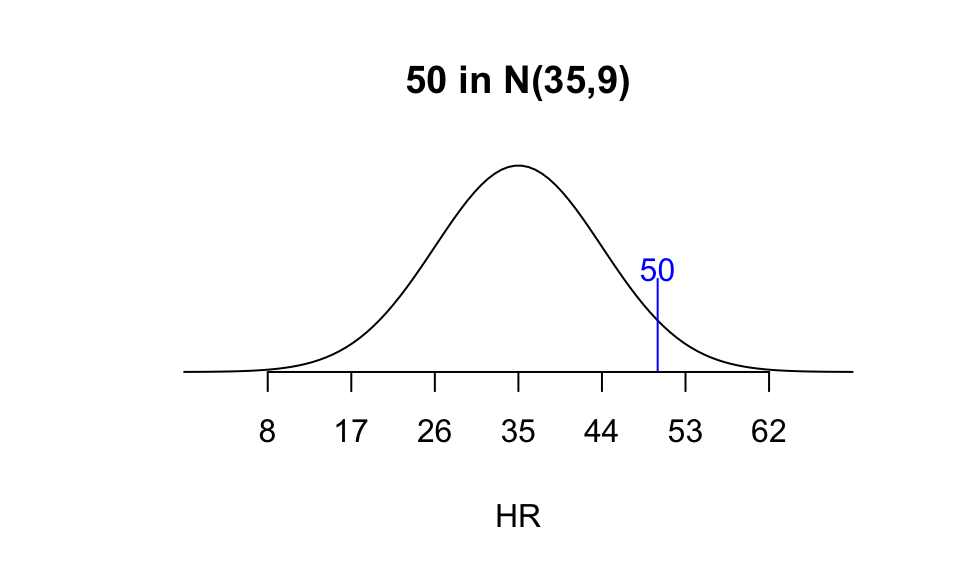
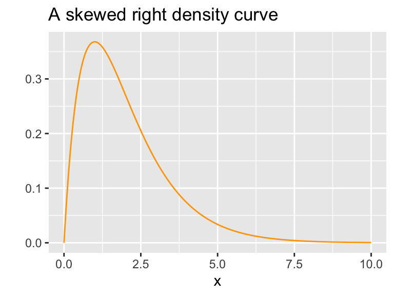
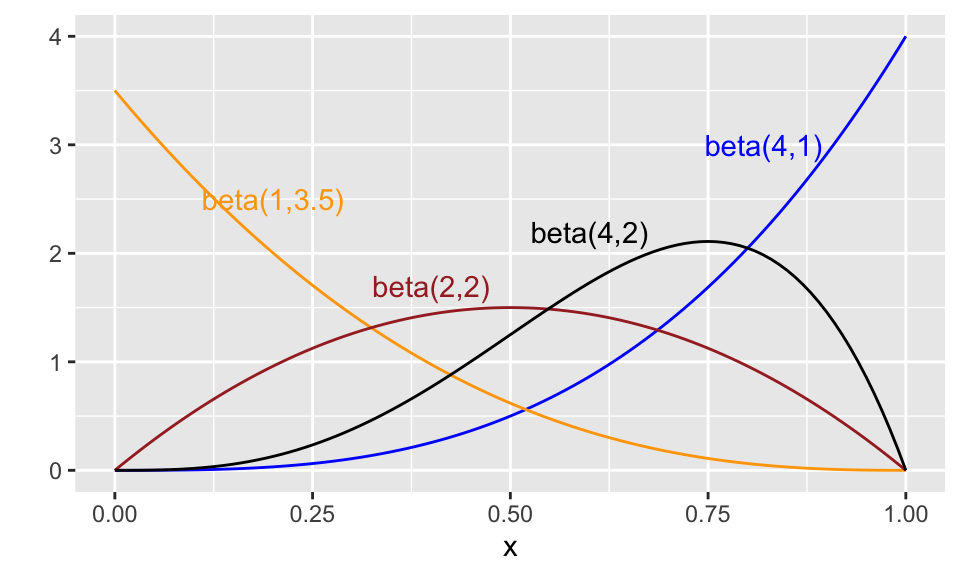

10 Important Continuous Random Variables
In this chapter we introduce the following well-known continuous random variables: uniform, normal, exponential, gamma, chi-square, and beta. In examples we work through, it will from time to time be convenient to compute probabilities in R. Appendix D contains details about the commands in R useful for doing so.
10.1 Uniform Distribution
Definition 10.1 Let \(\theta_1 < \theta_2\) be distinct real numbers. A random variable \(X\) has uniform distribution on the interval \([\theta_1,\theta_2]\) if it has probability density function \[ f(x)= \begin{cases} \frac{1}{\theta_2 - \theta_1} &\text{ if }\theta_1 \leq x \leq \theta_2 \\ 0 &\text{ else.} \end{cases} \] we may write \(X ~\sim~ U(\theta_1,\theta_2)\) to mean \(X\) is uniform on \([\theta_1,\theta_2]\).
A uniform random variable is a good model for picking a random real number between \(\theta_1\) and \(\theta_2\).
In R we access the uniform distribution with unif. For instance, we can generate a random sample of \(n\) numbers in the interval \([a,b]\) with the runif() command:
## [1] 0.02578737 4.66161065 8.70919503 3.95849271 6.77628340 9.34953408Example 10.1 (Average value of a function)
Use R to estimate the average value of \(f(x) = x^2\) over the interval [0,2].
Our strategy: Select a large random sample of points in the interval [0,2] and then compute the average of their squares.
## [1] 1.398379Note: From Calc I, we know the average value of a function \(f\) over the interval \([a,b]\) is \[\frac{1}{b-a} \int_a^b f(x)~dx,\] so here it’s \[\frac{1}{2}\int_0^2 x^2~dx = \frac{1}{6} x^3 ~\biggr|_0^2 = 4/3 \approx 1.333.\]
Theorem 10.1 If \(X\) is \(U(\theta_1,\theta_2)\), then \[E(X) = \frac{\theta_1 + \theta_2}{2}, ~~~ \text{ and } ~~~ V(X) = \frac{(\theta_2-\theta_1)^2}{12}.\]
Proof. Recall, \(X\) has pdf \[ f(x)= \begin{cases} \frac{1}{\theta_2 - \theta_1} &\text{ if }\theta_1 \leq x \leq \theta_2 \\ 0 &\text{ else.} \end{cases} \] So
\[\begin{align*} E(X) &= \int_{\theta_1}^{\theta_2} x \cdot \frac{1}{\theta_2-\theta_1}~dx\\ &= \frac{1}{\theta_2-\theta_1} \cdot \frac{1}{2}x^2 ~\biggr|_{\theta_1}^{\theta_2}\\ &= \frac{1}{\theta_2-\theta_1} \cdot \frac{1}{2}(\theta_2^2-\theta_1^2) \\ &= \frac{1}{\theta_2-\theta_1} \cdot \frac{1}{2}(\theta_2-\theta_1)(\theta_2+\theta_1) \\ &= \frac{\theta_1+\theta_2}{2}. \end{align*}\]
One can show similarly, that \[E(X^2) = \int_{\theta_1}^{\theta_2} x^2 \cdot \frac{1}{\theta_2-\theta_1}~dx = \cdots = \frac{\theta_2^2 + \theta_1\theta_2 + \theta_1^2}{3},\] so that \[V(X) = E(X^2) - E(X)^2 = \frac{(\theta_2-\theta_1)^2}{12}.\] The fun algebra details are left to the reader.
10.2 Exponential Distribution
The exponential distribution is often used to model experiments that aim to investigate: How long until something happens?
Definition 10.2 A random variable \(X\) has an exponential probability distribution with parameter \(\beta\), denoted \(\texttt{Exp}(\beta)\), if it has probability density function \[ f(x)= \frac{1}{\beta}e^{-(x/\beta)} ~~~ \text{ for }x \geq 0~~~ \text{ (and }f(x) = 0\text{ else.)} \]
First, let’s check that the total area under \(f(x)\) is 1.
\[\begin{align*} \int_0^\infty \frac{1}{\beta}e^{-x/\beta}~dx &= \lim_{b\to\infty}\left[\int_0^b \frac{1}{\beta}e^{-x/\beta}~dx\right] \\ &= \lim_{b\to\infty}\left[-e^{-x/\beta}\biggr|_0^b \right] & \text{(try u-sub.} u=-x/\beta \\ &= \lim_{b \to \infty}\left[1 - \frac{1}{e^{b/\beta}}\right]\\ &= 1. \end{align*}\]
Having done the above integral, we can write down a formula for the cumulative distribution function for an exponential distribution:
If \(X\) is \(\text{Exp}(\beta)\) then for \(x \geq 0\), \[\begin{align*} F(x) &= \int_0^x \frac{1}{\beta}e^{-t/beta}~dt\\ &= 1 - e^{-x/\beta}. \end{align*}\]
Example 10.2 Suppose \(X\) is (4). Find \(P(X < 8)\).
Well, \[\begin{align*} P(X < 8) &= F(8)\\ &= 1 - e^{-8/4} \\ &= 1 - e^{-2} \\ &\approx .865. \end{align*}\]
Theorem 10.2 If \(X\) is \(\texttt{Exp}(\beta))\), then \[E(X) = \beta, ~~~ \text{ and } ~~~ V(X) = \beta^2.\]
Proof. \[\begin{align*} E(X)&= \int_0^\infty x\cdot\frac{1}{\beta} e^{-x/\beta}~dx \\ &= \lim_{b \to \infty}\left[\int_0^b x\cdot\frac{1}{\beta} e^{-x/\beta}~dx\right] \end{align*}\]
To evaluate this integral, try integration by parts with \(u = x\) and \(dv = e^{-x/\beta}~dx\). Doing so, we obtain \[\begin{align*} E(X) &= \lim_{b \to \infty}\left[\int_0^b x\cdot\frac{1}{\beta} e^{-x/\beta}~dx\right]\\ &= \lim_{b \to \infty}\left[-xe^{-x/\beta} - \beta e^{-x/\beta}\biggr|_0^b\right]\\ &= \lim_{b \to \infty}\left[\left(\frac{-b}{e^{b/\beta}} - \frac{\beta}{e^{b/\beta}}\right) - \left(0 - \beta\right)\right]. \end{align*}\] Since \(\displaystyle \frac{b}{e^{b/\beta}} \to 0\) and \(\displaystyle \frac{\beta}{e^{b/\beta}} \to 0\) as \(b \to \infty\), we have proved that \(E(X) = \beta.\)
To prove that \(V(X) = \beta^2\), first find \(E(X^2)=\int_0^\infty x^2 f(x)~dx\) by integration by parts, and then use the fact that \(V(X) = E(X^2)-E(X)^2\). We leave details to those nostalgic for Calc II. :)
10.3 Normal Distribution
Definition 10.3 A random variable \(X\) has a normal probability distribution with parameters \(\mu\) and \(\sigma > 0\), denoted \(N(\mu,\sigma)\), if it has probability density function \[ f(x)=\frac{1}{\sigma\sqrt{2\pi}}e^{-\frac{(x-\mu)^2}{2\sigma^2}}, \text{ for } -\infty < x < \infty. \]
The graph of a normal density curve is bell-shaped, with peak at \(x = \mu\), and inflection points at \(x = \mu \pm \sigma\), facts we can readily demonstrate by analyzing the first and second derivative of \(f\).
Figure 10.1: A Normal density curve
Theorem 10.3 If \(X\) is \(N(\mu,\sigma)\), then \[E(X) = \mu, ~~~ \text{ and } ~~~ V(X) = \sigma^2.\]
Definition 10.4 The standard normal probability distribution is \(N(0,1)\). If \(Z\) is \(N(0,1)\), its pdf is \[f(z) = \frac{1}{\sqrt{2\pi}}e^{-z^2/2}, \text{ for all real numbers } z.\]
As we shall see, the family of normal distributions \(N(\mu,\sigma)\) has a special place of importance in statistics; many distributions have a bell-shape (physical measurements, for instance, such as heights of adult males, weights of newborns, wingspans of adult female bald eagles, ). But its special place of importance in statistics comes from the fact that the distribution of sample means from repeated sampling, as we shall see, are well-modeled by normal distributions.
Theorem 10.4 If \(X\) is \(N(\mu,\sigma)\) then \(Z = (X-\mu)/\sigma\) is \(N(0,1)\).
We prove this theorem later.
In practice, shifting from \(X\) to \[Z = \frac{X-\mu}{\sigma}\] gives us a way to consider unitless, standardized “Z-scores” associated to values in \(X\).
A Z-score for \(X\) gives the number of standard deviations above or below the mean \(X\) is in its distribution.
Example 10.3 (The 68-95-99.7 Rule) In any normal distribution \(N(\mu, \sigma)\):
- About 68% of the distribution is within 1 standard deviation of the mean.
- About 95% of the distribution is within 2 standard deviations of the mean.
- About 99.7% of the distribution is within 2 standard deviations of the mean.

For instance, in \(N(10,3)\),
- Roughly, 68% of the distribution is between 7 and 13, and
- 95% of the distribution is between 4 and 16, and
- 99.7% of the distribution is between 1 and 19.
Example 10.4 Which is more “impressive”: hitting 50 home runs in a season when the league home run distribution is \(N(35,9)\), or hitting 35 home runs in a season when the league distribution is \(N(24,5)\)?
For 50 in \(N(35,9)\), \[Z = \frac{50-35}{9} = \frac{5}{3} \approx 1.67.\]
For 35 in \(N(24,5)\), \[Z = \frac{35-24}{5} = \frac{11}{5} = 2.2.\]

A person hitting 35 HR in a league with distribution \(N(24,5)\) is more extreme (at the high end), and so more impressive in that sense.
Now we focus on some fine print, proving that the density function for a normal distribution is, indeed, a valid density function.
Lemma 10.1 \[\int_{-\infty}^{\infty} e^{-x^2/2}~dx = \sqrt{2\pi}.\]
Proof. First, we remark that the integral converges by comparison with \(\displaystyle \int_{-\infty}^{\infty} e^{-x/2}~dx.\)
Suppose the value of the integral we want to calculate is \(A\). We use some integration techniques from vector calculus to first find the value of \(A^2\). If you haven’t seen vector calculus, don’t sweat the details, but demand your vector calculus prof prove this lemma when you take the class :). Ok, let’s look at \(A^2\). \[\begin{align*} A^2 &= \left(\int_{-\infty}^{\infty} e^{-x^2/2}~dx \right)\left(\int_{-\infty}^{\infty} e^{-y^2/2}~dy \right)\\ &= \int_{-\infty}^{\infty} \int_{-\infty}^{\infty} e^{-x^2/2} e^{-y^2/2} dx dy \\ &= \int_{-\infty}^{\infty} \int_{-\infty}^{\infty} e^\frac{-(x^2+y^2)}{2} ~dx dy \\ &= \int_0^{2\pi}\int_0^\infty e^{-r^2/2}~r ~dr~ d\theta &\text{ change to polar coordinates}\\ &= 2\pi \int_0^\infty e^{-r^2/2}~r ~dr \\ &= -\pi \int_0^\infty e^{-u} ~du & \text{ let } u = r^2/2 \\ &= 2\pi \left[-e^{-u} \biggr|_0^\infty \right] &= 2\pi [-0 + 1] \\ &= 2\pi \end{align*}\]
Since \(A^2 = 2\pi\), \(A = \sqrt{2\pi}\).
We have the following corollaries to this lemma.
Corollary 10.1 The function \(f(x) = \frac{1}{\sqrt{2\pi}}e^{-x^2/2}\), for \(-\infty < x < \infty\), is a valid probability density function.
Proof. Clearly, \(f(x) \geq 0\) for all \(x\), and the previous lemma ensures that \(\int_{-\infty}^\infty f(x)~dx = 1.\).
Corollary 10.2 The function \(f(x) = \frac{1}{\sigma\sqrt{2\pi}}e^{-(x-\mu)^2/(2\sigma^2)}\), for \(-\infty < x < \infty\), is a valid probability density function.
Proof. Clearly, \(f(x) \geq 0\) for all \(x\), and after \(u\)-substitution of \(u = (x-\mu)/\sigma\), the previous lemma ensures that \(\int_{-\infty}^\infty f(x)~dx = 1\).
10.4 Gamma Distribution
Some random variables are always nonnegative and yield distributions of data that are skewed right, as pictured below.
Some typically skewed right distributions include household incomes in a city, the length of time between malfunctions of some machine, and major league baseball salaries. The gamma probability distribution, which has two parameters \(\alpha\) and \(\beta\), can model such skewed right distributions. The parameter \(\alpha\) is sometimes called the shape parameter, \(\beta\) is called the scale parameter, and its reciprocal \(1/\beta\) is called the rate.
The density function for a gamma distribution looks formidable, so we’ll take time to go through it carefully.
Definition 10.5 A random variable \(X\) has a gamma probability distribution with parameters \(\alpha>0\) and \(\beta>0\) if and only if it has probability density function \[ f(x)= \frac{1}{\beta^\alpha \Gamma(\alpha)}x^{\alpha-1}e^{-(x/\beta)}~~~ \text{ for }x \geq 0~~~ \text{ (and }f(x) = 0\text{ else)} \] where \(\displaystyle\Gamma(\alpha) = \int_0^\infty t^{\alpha-1}e^{-t}~dt\). If \(X\) has such a pdf we might say \(X\) is \(\texttt{gamma}(\alpha,\beta)\).
Here are plots of three different gamma distributions.

The quantity \(\Gamma(\alpha)\) is called the gamma function, which has some nice features.
Lemma 10.2 If \(n > 0\) then \(\Gamma(n+1) = n \cdot \Gamma(n).\)
Proof. This follows by integration by parts! First note, \[ \Gamma(n+1) = \int_0^\infty t^{(n+1)-1}e^{-t}~dt = \int_0^\infty t^n e^{-t}~dt. \]
Let \(u = t^n\), and \(dv = e^{-t}~dt\). Then \(du = nt^{n-1}~dt\) and \(v = -e^{-t}\), and
\[\begin{align*} \int_0^\infty t^n e^{-t}~dt &= -t^ne^{-t}\biggr|_0^\infty - \int_0^\infty nt^{n-1}(-e^{-t})~dt \\ &= \lim_{b \to \infty}\left[-t^ne^{-t}\biggr|_0^b\right]+n\int_0^\infty t^{n-1}e^{-t}~dt \end{align*}\]
Apply l’hopital’s rule to see that the limit term above evaluates to 0, and note the integral term above is precisely the definition of \(\Gamma(n)\). Thus, we have \[ \Gamma(n+1) = n \cdot \Gamma(n).\]
This lemma provides us with the following
Fun Fact: \(\Gamma(n) = (n-1)!\) for any positive integer \(n\).
To see why this is the case, we first show \(\Gamma(1) = 1\):
\[\begin{align*} \Gamma(1) &= \int_0^\infty t^0e^{-t}~dt\\ &= \lim_{b\to\infty}\left[\int_0^b e^{-t}~dt\right]\\ &= \lim_{b\to\infty}^\infty\left[-e^{-t}\biggr|_0^b\right]\\ &= \lim_{b\to\infty}^\infty\left[-e^{-b}+1\right]\\ &= 1. \end{align*}\]
Next, the lemma gives us a recursive way to find \(\Gamma(2), \Gamma(3), \Gamma(4)\) and so on. Or, using mathematical induction, \(\Gamma(1) = 1\) is our basis step, and the inductive step is proved as follows: Suppose \(\Gamma(k) = (k-1)!\) for some \(k \geq 1\). Then
\[\begin{align*} \Gamma(k+1) &= k\cdot \Gamma(k) &\text{ by the lemma }\\ &= k \cdot (k-1)! &\text{ by substitution}\\ &= k! \end{align*}\]
It follows that \(\Gamma(n) = (n-1)!\) for all positive integers \(n\).
The family of gamma distributions contain two special sub-families, one of which we’ve already seen!
Theorem 10.5 If \(X\) is \(\texttt{gamma}(\alpha,\beta))\), then \[E(X) = \alpha\beta, ~~~ \text{ and } ~~~ V(X) = \alpha\beta^2.\]
We prove this later in Chapter 11.
Example 10.5 Where does the peak of the \(\texttt{gamma}(\alpha,\beta)\) pdf occur?
This looks like a question for calculus. We can find \(f^\prime\), set it to 0, and consider critical points.
We leave the details to the reader for now, but find the following results:
- if \(\alpha \leq 1\), \(f^\prime(x) < 0\) for all \(x > 0\), so \(f\) is always decreasing and the peak occurs when \(x = 0\).
- If \(\alpha > 1\), the pdf for \(X \sim \texttt{gamma}(\alpha, \beta)\) has its peak at \(x = (\alpha-1)\beta.\)
10.4.1 Exponential Distribution
Set \(\alpha = 1\) and you will find \(\texttt{gamma}(1,\beta) = \texttt{Exp}(\beta),\) because their density functions are identical. So exponential distributions are special gamma distributions.
10.4.2 Chi-square distribution
Definition 10.6 Let \(\nu\) be a positive integer. \(X\) has a chi-square distribution with \(\nu\) degrees of freedom, denoted \(X\) is \(\chi^2(\nu)\), if \(X\) is \(\texttt{gamma}(\alpha = \nu/2, \beta = 2).\)
Here are plots of three different chi-square distributions.

10.5 Beta Distribution
The beta probability distribution provides a way to model random variables whose possible outcomes are all real numbers between 0 and 1. Such distributions are useful for modeling proportions. As with the gamma and normal distributions, this is a 2-parameter family of distributions. Altering the parameters \(\alpha\) and \(\beta\) gives us, well, different shapes for the density curves.
Definition 10.7 A random variable \(X\) has a beta probability distribution with parameters \(\alpha>0\) and \(\beta>0\) if and only if it has probability density function \[ f(x)= \frac{\Gamma(\alpha + \beta)}{\Gamma(\alpha)\cdot \Gamma(\beta)}x^{\alpha-1}(1-x)^{\beta-1}~~~ \text{ for }0 \leq x \leq 1~~~ \text{ (and }f(x) = 0\text{ else)} \]
If \(X\) has such a pdf we say that \(X\) is \(\texttt{beta}(\alpha,\beta)\).
The gamma function (10.5) appears in this pdf three times. Recall that for positive integers \(n\), \(\Gamma(n) = (n-1)!\) so for integer values of \(\alpha\) and \(\beta\), the beta density function is fairly nice. Indeed,
- \(\displaystyle X \sim \texttt{beta}(1,1) \Rightarrow f(x) = \frac{\Gamma(2)}{\Gamma(1)\Gamma(1)}x^0(1-x)^0 = 1\). Whoa! \(\text{beta}(1,1)\) is the uniform distribution \(U(0,1).\)
- \(\displaystyle X \sim \texttt{beta}(1,2) \Rightarrow f(x) = 2(1-x)\).
- \(\displaystyle X \sim \texttt{beta}(2,1) \Rightarrow f(x) = 2x\).
- \(\displaystyle X \sim \texttt{beta}(2,2) \Rightarrow f(x) = 6x(1-x)\).
- \(\displaystyle X \sim \texttt{beta}(n,1) \Rightarrow f(x) = nx^{n-1}\).
- \(\displaystyle X \sim \texttt{beta}(1,n) \Rightarrow f(x) = n(1-x)^{n-1}\).
Here are a few beta distributions:

Theorem 10.6 If \(X\) is \(\texttt{beta}(\alpha,\beta))\), then \[E(X) = \frac{\alpha}{\alpha+\beta}, ~~~ \text{ and } ~~~ V(X) = \frac{\alpha\beta}{(\alpha+\beta)^2(\alpha+\beta+1)}.\]